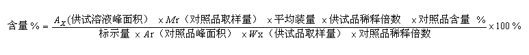
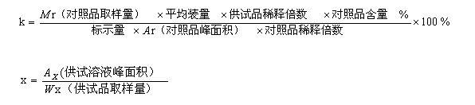
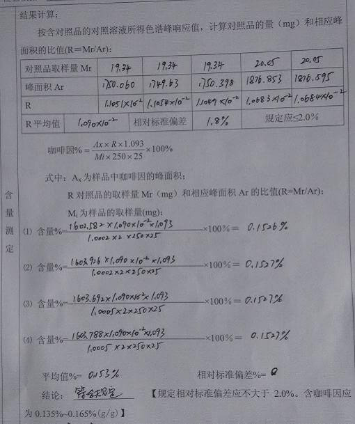
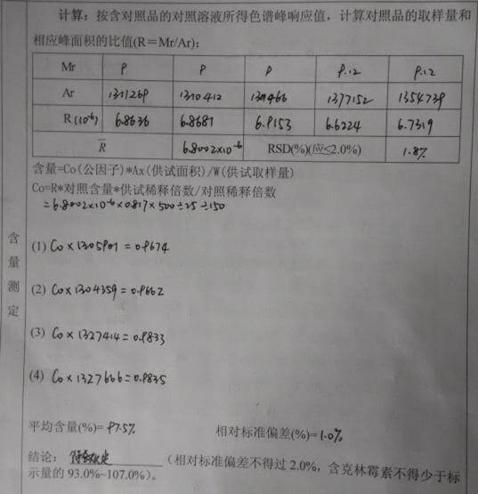

序跋
9月中旬在医学院考中级，途经图书馆立足了一小会，内心茫然了一阵后，发了一条“十年一觉医学梦”的动态后便扬长而去。在归途中，我一直在想，过去十年里有什么可圈点的事情？并没有多少！不过，还是应该做一个回顾与总结。
我始终想不到一个合适的标题。直到国庆拜读完了《黑客与画家》，有种惺惺相惜的感觉。黑客做名词用是技术怪杰，做动词用是优雅地解决问题。而我处理药学的问题既称不上什么技术也并不如何优雅，但我还是自大地将这个系列命名为《黑客与药师》。
系统适应性与指针
在药检所的时候，我还沉浸在跟着老师做实验的新奇中，当我最终也成了一名检验员，被淹没在报告的海洋里，一半时间做实验就要一半时间写报告，繁琐且窒息。终于有一天标准操作流程SOP的修改权落在了我手上，我开始了我的投机取巧。
当时已经有了系统适应性的引用——谢天谢地——使得每份报告不用都写一次系统记录。但SOP显然未将引用用得彻底，冗余日积月累其实造成了很大的浪费。举高效液相的含量测定为例，一般计算公式如下：

如果SOP将公式堆在那，写报告的时候将所有数据带入，份数一多的话就得多写很多东西，直到某天我想起这就是个一次线性函数 y = kx.

只要将k单独抽象并在系统适应性中解算出来，后面一劳永逸的引用就好了。k就像一个指针，写报告的时候无需知道其具体情况只需知道引用何处就好。负担一下子就轻松了许多，世界瞬间如此美妙。


编写详尽的SOP，不多做多余的操作，精简报告样式，不多写一个废字。虽然武装了如此先进的理念，其实能改变的也只有自己罢了，但革命的思想很重要。